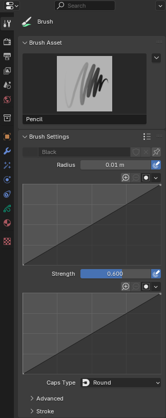

Draw Brushes¶
Tham khảo
- Mode:
Draw Mode
- Brush:
Brush Draw cho phép bạn vẽ các nét tay tự do.
Brush Settings¶


- Material
Bộ chọn data-block cho material.
- Size
Đường kính của brush tính bằng pixel.
F cho phép bạn thay đổi kích thước brush một cách tương tác bằng cách kéo con trỏ hoặc nhập một số rồi xác nhận.
- (Size Pressure)
Điều chỉnh kích thước brush dựa trên lực bút khi dùng Graphics Tablet. Độ dốc của lực bút có thể được tùy chỉnh bằng curve widget.
- Strength
Điều khiển độ trong suốt (alpha) của nét vẽ. Từ hoàn toàn trong suốt (0.0) đến hoàn toàn đục (1.0).
Bạn có thể thay đổi độ mạnh của brush một cách tương tác bằng cách nhấn Shift-F trong 3D Viewport, rồi di chuyển con trỏ và nhấn LMB. Bạn cũng có thể nhập kích thước bằng số.
- (Strength Pressure)
Điều chỉnh độ mạnh dựa trên lực bút khi dùng Graphics Tablet. Độ dốc của lực bút có thể được tùy chỉnh bằng curve widget.
- Stroke Mode
Xác định phần nào của material Grease Pencil bị ảnh hưởng khi vẽ.
- Stroke:
Chỉ áp dụng thành phần nét (viền ngoài) của material. Phần fill không được tạo hay thay đổi.
- Fill:
Chỉ áp dụng thành phần fill của material. Không vẽ viền nét.
- Both:
Áp dụng cả thành phần nét và fill của material khi tạo hoặc chỉnh sửa nét vẽ.
- Caps Type
Hình dạng của điểm đầu và điểm cuối của nét vẽ.
- Round:
Nét vẽ bắt đầu và kết thúc bằng hình cong.
- Flat:
Nét vẽ bắt đầu và kết thúc bằng cạnh cắt thẳng.
Advanced¶
- Spacing
Điều khiển khoảng cách nhỏ nhất giữa các điểm trong nét vẽ, tính theo phần trăm kích thước brush.
Khoảng cách nhỏ hơn hữu ích khi vẽ với chuyển động nhanh. Bình thường điều này sẽ tạo ra ít mẫu hơn và dẫn đến khoảng cách giữa các điểm lớn hơn. Khi phần trăm khoảng cách bị giảm, nhiều điểm hơn được tạo ra để đảm bảo khoảng cách tối thiểu.
Khi vẽ chậm, mật độ điểm thường đã cao. Trong trường hợp này, cài đặt khoảng cách không thêm điểm mới. Nó chỉ đảm bảo khoảng cách tối thiểu và sẽ không xóa các điểm.
- Active Smooth
Số lần lặp làm mượt được áp dụng lên nét vẽ trong khi vẽ.
- Angle
Hướng của thiết bị đầu vào tạo độ dày lớn nhất cho nét vẽ (0° cho hướng ngang).
- Factor
Mức giảm độ dày khi nét vẽ vuông góc với giá trị Angle.
- Hardness
Mức độ trong suốt (alpha) áp dụng từ viền điểm vào tâm. Chỉ hoạt động khi brush dùng material nét kiểu Dot hoặc Box.
- Aspect X, Y
Điều khiển chiều rộng và chiều cao của dải chuyển tiếp alpha.
Stroke¶
Post-Processing¶
Các phương pháp hậu xử lý được thực hiện trên nét vẽ khi bạn vẽ xong, ngay sau khi nhả LMB hoặc đầu bút Pen. Bạn có thể bật/tắt hậu xử lý bằng hộp kiểm trong tiêu đề panel của phần này.
- Smooth
Độ mạnh của quá trình làm mượt vị trí các điểm dọc theo nét vẽ.
- Iterations
Số lần lặp làm mượt được áp dụng lên nét vẽ.
- Subdivisions
Số lần phân nhỏ (subdivision) áp dụng cho nét vẽ mới tạo.
- Simplify
Giảm số điểm cuối cùng trong nét vẽ bằng thuật toán thích nghi.
- Trim Strokes End
Tự động cắt tỉa phần cuối của các nét vẽ giao nhau.
- Outline
Kích hoạt việc chuyển đổi nét vẽ mới tạo thành viền ngoài của nó.
- Material
Material được dùng cho nét viền ngoài.
- Thickness
Độ dày được dùng cho nét viền ngoài.
- Curve Type
Loại đường cong được dùng để nội suy giữa các điểm của nét vẽ khi vẽ.
- Catmull Rom:
Tạo đường cong nội suy mượt đi qua tất cả các điểm, tạo ra nét vẽ trông tự nhiên.
- Poly:
Nối các điểm bằng các đoạn thẳng mà không làm mượt.
- Bézier:
Tạo đường cong mượt bằng nội suy Bézier, cho phép kiểm soát tốt hơn và có hình dạng nét vẽ tròn trịa hơn.
- NURBS:
Dùng Non-Uniform Rational B-Splines cho các đường cong mượt, phù hợp với các hình dạng chính xác và được định nghĩa bằng toán học.
- Threshold
Khoảng cách nhỏ nhất giữa các điểm được yêu cầu khi chuyển đổi nét vẽ.
Các điểm gần nhau hơn khoảng cách này sẽ được gộp lại hoặc bỏ qua trong quá trình chuyển đổi, giúp giảm số điểm và đơn giản hóa đường cong thu được.
Randomize¶
Thêm tính ngẫu nhiên vào vị trí của các điểm dọc theo nét vẽ. Bạn có thể bật/tắt Randomize bằng hộp kiểm trong tiêu đề panel của phần này.
- Radius
Mức ngẫu nhiên áp dụng dựa trên lực bấm của thiết bị đầu vào.
- Strength
Mức ngẫu nhiên áp dụng cho giá trị độ mạnh của nét vẽ (alpha).
- UV
Mức ngẫu nhiên áp dụng cho việc xoay UV.
- Hue, Saturation, Value
Làm ngẫu nhiên sắc độ, độ bão hòa và giá trị của Color của nét vẽ.
- Jitter
Mức rung (jitter) được thêm vào nét vẽ.
Common Options
- Stroke Random
Chỉ dùng tính ngẫu nhiên ở cấp độ nét vẽ.
- Use Pressure
Dùng lực bút để điều khiển độ mạnh của hiệu ứng. Độ dốc của lực bút có thể được tùy chỉnh bằng curve widget.
Stabilize Stroke¶
Stabilize Stroke giúp giảm rung của nét vẽ trong khi vẽ bằng cách làm trễ và hiệu chỉnh vị trí các điểm. Bạn có thể bật/tắt Stabilize Stroke bằng hộp kiểm trong tiêu đề panel của phần này.
- Radius
Khoảng cách tối thiểu tính từ điểm cuối cùng trước khi stroke tiếp tục.
- Factor
Hệ số làm mượt, trong đó giá trị cao hơn cho nét vẽ mượt hơn nhưng cảm giác vẽ giống như bạn đang kéo nét vẽ.
Cursor¶
Con trỏ có thể được tắt bằng hộp kiểm trong tiêu đề Cursor.
- Show Fill Color while Drawing
Hiển thị màu material được liên kết với brush trong viewport.